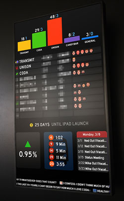

This article was recently run in a local magazine called Tölvumál. For those of you who don’t get the magazine or don’t live in Iceland, I have published it here.
If you are not monitoring the health of your company’s finance, customers and time, you are doomed to failure. A dashboard and solid metrics are the life-blood of any company. A well-designed and implement dashboard can be the difference in being successful and shutting down. Understanding what is needed to create worthwhile metrics that are useful to the whole organization and displaying them in a way that can’t be mis-interpreted isn’t an easy task.
Does your business have a glance-able tool for you to make decisions? Is there a single place were you can go to see all the important key performance indicators? Can you easily take the information with you on the go and access it from any device anywhere? It is unlikely you said yes to all three of these questions. Having a single place, accessible from anywhere which quickly conveys meaningful information is a difficult task. It’s not an all or nothing proposition, have metrics is still better than nothing. Having a dashboard only available at work is also better than no dashboard at all.
So how do we go about creating metrics to track the business and a dashboard to monitor the health and progress? Before we get into design and implementation, we need to examine your company culture to find out what metrics you already have, which need to be tracked and how to get into a different mindset about quality, innovation and leadership.
METRICS
Business metrics tend to come in two flavors; vanity metrics and actionable metrics. While vanity metrics are nice to show-off, they don’t mean much to the company. For instance, the number ‘hits’ on a website is purely a vanity metric. Every ‘hit’ to your website means something different. Maybe it’s the same user coming back lots of time, maybe it is lots of users visiting only once, maybe your website has lots of images and each counts as a ‘hit’ when viewed. Generating more ‘hits’ isn’t solving a problem, achieving a goal or even comparable and therefore it is a vanity metric.
Instead of looking at the number of ‘hits’ a website gets, why not look at the number of sales. Now we are moving away from vanity and beginning to look at actionable items. Rather than increase ‘hits’ we want to increase sales to generate more money. We can get more granular and create a ‘sales per customer’ metric. There is a direct impact and feedback loop for actionable metrics. You track issues and goal, fix or change them, and check the progress. Measuring the right things is more important than just measuring to be measuring.
Edward Deming was a 01950s statistician and professor who turned around the Japanese industrial system after WWII. Many of his ideas and teachings are still in place today. There are many books on the topic but it boils down to his famous 14 key points. One of the points highlights the need to remove quotas. If an employee gets paid based on the number of units shipped, he argues this is bad practice. Quotas are easy metrics to track and put on a dashboard. If you are building 10% more units this quarter than last quarter it makes sense to have this metric on your dashboard. His argument isn’t about the quantity of units, but about the quality. The real actionable metric should be: What percentage of units shipped this quarter are defective? Quality is the real goal – not shipping more units, but to shipping fewer defective units. The same will be true for increasing ‘sales per customer’. We run the risk of either tricking customers into buying more stuff they don’t need or charging more to inflate our sales numbers in the short-term. The problem will be that those customers never return and we lose out in the longer term. Maybe a better customer metric would be number of repeat sales or customer loyalty? All these issues and caveats makes creating a good metric much more difficult than it might seem on the surface.
Once you better understand what metrics your company relies on, you realize that each department has different metrics they need to track. Accounting for instance, needs to know about the number of defective units, repair and return costs, but it isn’t something they can directly fix. One the flip-side, knowing the average time a late invoice is paid is obviously more important to the accounting team than it is other parts of the workforce. Just because a metric isn’t useful for your team doesn’t mean that it should be ignored or not tracked. Everyone needs to work together to make improvements.
Once you have identified your metrics, it is time to look at how to convey those raw numbers and trends in a way that anyone can understand. This is where we get into dashboard design. Remember that even the most beautifully design dashboards are only as strong as the metrics they show.
DASHBOARDS
Let’s discuss some of the early stage questions you should be asking yourself and the team as you create a centralized place for you to keep an eye on your business.
First, we need to decide if we are going to build our own dashboard or buy one. A dashboard can be a stand-alone application, but it can also simply be a webpage. Both of which are available to buy or build. Since most of the data you’ll be accessing will be across the network or even the internet, it makes sense to also use web-based technologies to pull together the design of your dashboard. Using an app might be cleaner and more tightly coupled to the operating system, but it also limits you specific devices and isn’t always as flexible, adaptable or as quick to change as a web-based solution.
Designing a good dashboard requires a lot of thought and planning. Not every metric you want to present will come as a cell in a spreadsheet or from an API call. There will be integration issues across departments and legacy systems. If coordinating or getting “buy-in” from management is too difficult, then maybe not everything needs to be automated from the start. Updating the dashboard weekly or quarterly is less efficient but a way to jump start a discussion until a better integration can be created.
After you’ve managed to get all the metrics you want calculated and pulled from various sources the next hurdle is to decide on a hierarchy and importance of each metric.
First and foremost, we need to consider the audience for this dashboard. Is this something that only a few c-level executives will be looking at or is this something open to more folks. Maybe it is on a giant monitor hanging in the office or in the lobby. Knowing who is going to see this information helps us figure out what we can and can’t be showing.
Everyone think’s their metric is the most important, and to them it is. Much like the company’s public face website, everyone wants to be on the homepage with a link to their pet-project or department. Maybe you have an editorial team which makes those decisions and that process can also be used for the internal dashboard. Maybe want to build a dashboard which is customizable and let people have their own custom layout and design to suit their needs. This creates more design work and support issues, but it is a trade-off which might be worth it for larger organizations. Another solution is to simply create multiple dashboards, one for each of the departments. There is no customization, but at the same time not everyone is forced to see the same view.
A good dashboard has a mix of business metrics along with other useful data sprinkled in. Let’s look at a few examples and discuss different types of metrics.
The Panic Software company has a large dashboard screen which can be seen through out the office. This later became the status board app. One of the interesting sections is the bus time-table. If your dashboard is something displayed company-wide, having non-business related data can also be useful. Strætó has an API with real-time position of the busses. If you’re company has employees taking the bus, it might be useful to expose this information. Other simple data to display might be tomorrow’s weather forecast. Not everything on the dashboard needs to be a direct business function. These additional pieces of information help the staff, which in turn makes the workplace better.
There are other web-based solutions like Gecko Board which also allows you to pull in various data sources such as weather, RSS and Twitter.
Once you have sorted out your metrics, then the hierarchy and layout, we have to look into our third consideration for dashboards: multiple screens.
Creating a solid dashboard means that we need to be taken into consideration is that it will be viewed on multiple devices. This might mean a 42 inch TV in the call center, but also on the 3.5 inch screen on your mobile phone. Designing for this range and usage has always been a challenge to get right, but we are beginning to see the tools to achieve this mature enough that it should be a standard feature.
Rather than reducing the size of the graphics or removing data, make the design responsive. The design changes, flexes and responds based on the screen-size. For larger TVs the font gets bigger and the design makes use of the space. Whereas on small screen the dashboard boxes and order are moved around so it is much taller and you scroll vertically.
The term “second screen” and “second screen experience” are used a lot in the mobile spaces. It refers to a second, or sometimes 3rd or forth screen competing for you attention. The first screen is usually the TV or computer monitor, then followed by some second screen, usually a tablet or phone. With Android devices nearing 1 billion activations this year it means a lot of Android devices are also going into the draw or put up for sale second-hand. These can be an ideal way to create a ‘second screen’ experience for the office on a small budget.
You might be able to easily recycle some of these devices to create a second screen experience which compliments the data that you already see on a daily basis via your email or other tools. Small dashboards that can be left in meeting rooms, next to the water cooler, in the reception and other places where people might casually glade at the heart-beat of the company.
Any dashboard needs to be the right balance of actionable and relevant information for the reader. Stephen Few wrote a great book called “Information Dashboard Design: Displaying Data for At-a-Glance Monitoring“. In it, he goes through many of the design principals which are needed to convey the information effectively. From simple facts like avoiding steam-power gauges on your dashboards to different ways to make data stand out from a sea of other information, the book is an excellent resource for tackling complex design.
A dashboard is there as a sign post to help guide you. It doesn’t replace decision making or good leadership.
It is important to realize that not everything can be turned into a metric and put onto a dashboard. Attending conferences, continued education or “20% time” are near impossible to actually measure the affects, but no one argues that there isn’t an impact. Another of Deming’s points focuses on running the company purely by numbers. He says “… Eliminate management by numbers and numerical goals. Instead substitute with leadership.” Metrics and dashboards are useful for identifying problems and areas of improvement, but should only be an aid rather than a crutch.